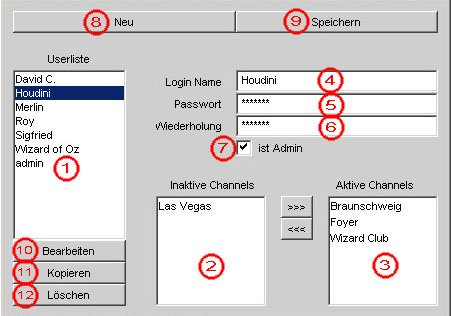
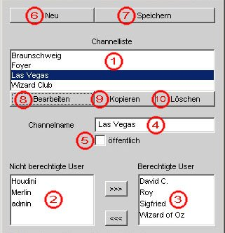

Kapitel 2: Benutzung der Administratorfunktionen
-
2.1 Die Benutzerverwaltung
-
Mit Hilfe der Benutzerverwaltung haben Sie die Möglichkeit, neue Benutzer anzulegen,
Benutzerdaten zu bearbeiten und existierende Benutzer zu löschen.
-
2.1.1 Das Benutzerverwaltungsfenster
-

- Gesamte Benutzerliste
- Fenster "Inaktive Channels"
- Fenster "Aktive Channels"
- Feld "Login Name"
- Feld "Passwort"
- Feld Wiederholung"
- Checkbox "Ist Admin"
- Knopf "Neu"
- Knopf "Speichern"
- Knopf "Bearbeiten"
- Knopf "Kopieren"
- Knopf "Löschen"
-
2.1.2 Neuen Benutzer anlegen
-
Um einen neuen Benutzer anzulegen, klicken Sie zuerst auf "Neu".
Tragen Sie dann den Loginnamen und Passwort für den Benutzer in die
entsprechenden Felder ein. In das Feld "Wiederholung" tragen Sie nochmals
das Passwort ein, damit sichergestellt ist, das Sie keinen
Tippfehler bei der ersten Eingabe gemacht haben.
Wenn Sie "Ist Admin" aktivieren, dann bekommt der neue Benutzer Administrationsrechte
und hat somit auch Zugriff auf die Benutzer- und Channelverwaltung. Also
überlegen Sie vorher gut, ob der neue Benutzer auch Administrator sein
soll :-).
Danach müssen Sie noch festlegen, welche Channels der neue
Benutzer betreten darf. Dazu wählen Sie in der Liste "Inaktive Channels"
den gewünschten Channel aus und schieben ihn mit den Pfeilknöpfen in
die Liste "aktive Channels". Haben Sie die Channels ausgewählt und
Benutzernamen und Paswort, sowie den Administratorstatus festgelegt,
klicken Sie einfach auf "Speichern" um den neuen Benutzer dauernd im
System zu speichern.
Sie können sich auch etwas Arbeit ersparen, indem Sie den "Kopieren"-
Knopf benutzen.
Dazu wählen Sie aus der Benutzerliste einen bereits
existierenden Benutzer aus, klicken auf "Bearbeiten" und dann auf "Kopieren"
Die Daten dieses Benutzers in den entsprechenden Feldern können jetzt geändert werden
und durch klicken auf "Speichern" gesichert werden.
In der Benutzerliste steht nun eine Kopie des bereits existierenden Benutzers.
Diese wählen Sie in der Benutzerliste aus und klicken erneut auf
"Bearbeiten". Sie können nun den Benutzernamen und das Passwort, sowie
die für den neuen Benutzer aktiven Channels, entsprechend ändern.
Am Ende müßen sie allerdings die aktualisierten Daten wieder mit
"Speichern" sichern.
-
2.1.3 Benutzer editieren
-
Um Benutzerdaten zu verändern, z.B. das Passwort oder die aktiven
Channels, wählen sie den zu bearbeitenden Benutzer in der Benutzerliste
aus und klicken auf "Bearbeiten".
Die Daten dieses Benutzers befinden sich nun in den entsprechenden
Felden, wo sie geändert werden können.
Channels werden mit den Pfeilbutton zwischen den Listen verschoben.
Wenn Sie die Änderungen abgeschlossen haben, klicken Sie auf "Speichern"
um die geänderten Daten dauerhaft zu sichern.
-
2.1.4 Benutzer löschen
-
Wenn Sie einen Benutzer dauerhaft aus dem System entfernen wollen, wählen
Sie seinen Namen in der Benutzerliste aus und klicken auf "Löschen".
Der Benutzer ist daraufhin aus der Benutzerverwaltung komplett gelöscht.
-
2.2 Die Channelverwaltung
-
Mit Hilfe der Channelverwaltung hat ein Administrator die Möglichkeit, neue
Channels anzulegen, existierende Channels zu bearbeiten und existierende
Channels zu löschen.
-
2.2.1 Das Channelverwaltungsfenster
-

- Gesamtliste der Channels
- Liste "Nicht berechtigte Benutzer"
- Liste "Berechtigte Benutzer"
- Feld "Channelname"
- Checkbox "öffentlich"
- Knopf "Neu"
- Knopf "Speichern"
- Knopf "Bearbeiten"
- Knopf "Kopieren"
- Knopf "Löschen"
-
2.2.2 Neuen Channel anlegen
-
Wenn Sie einen neuen Channel anlegen möchten, klicken Sie einfach auf
den Knopf "Neu".
Dann tragen sie im Feld "Channelname" den Namen ein,den der neue Channel haben soll.
Aktivieren Sie nun die Checkbox "öffentlich", können Sie sofort "Speichern" klicken,
denn wenn diese Checkbox aktiviert ist, kann jeder Benutzer, und auch Gäste, diesen
Channel benutzen.
Ist die Checkbox allerdings nicht aktiviert, so müssen Sie durch klicken auf
die Pfeile die Benutzer aus der Liste "Nicht berechtigte Benutzer" dem Channel
Benutzer zuweisen, die diesen Channel betreten dürfen. Haben Sie dies abgeschlossen, so
klicken Sie "Speichern" und der neue Channel ist aktiv.
Um sich etwas Arbeit zu ersparen, können Sie auch einen bereis
existierenden Channel kopieren, indem Sie ihn aus der Channel-
liste auswählen und "Bearbeiten klicken".
Die Daten des Channels, sowie die dafür berechtigten Benutzer stehen
nun in den entsprechenden Feldern. Durch klicken des "Kopieren" Knopfes und
anschließendes Klicken des "Speichern" Knopfes wird eine Kopie
des Channels erzeugt. Diese können Sie nun aus der Channelliste
auswählen und nach Ihren Wünschen bearbeiten. Wenn Sie damit
fertig sind genügt ein Klick auf "Speichern" und der Channel ist
aktiv. Diese Methode ist z.B. sinnvoll, wenn sie eine Liste
von berechtigten Benutzern eines Channels in den neuen über-
nehmen möchten, Sie also nur den Namen ändern wollen.
-
2.2.3 Channel bearbeiten
-
Wenn Sie einen Channel bearbeiten möchten, wählen Sie diesen aus
der Channelliste aus und klicken Sie auf "Bearbeiten".
Sie können den Namen des Channels ändern, indem Sie einen neuen eingeben.
Sie können den Channel für jeden, durch Aktivierung des "öffentlich"-
Knopfs, öffentlich machen, und Sie können die Liste der berechtigten
Benutzer durch klicken der Pfeiltaste zwischen den Benutzerliste
ändern, indem Sie die Benutzer von Liste zu Liste schieben.
Haben Sie Ihren Bearbeitungswunsch abgeschlossen, so klicken Sie
"Speichern" und die Änderungen sind aktiv.
-
2.2.4 Channel löschen
-
Wollen Sie einen Channel löschen?
Wählen sie Ihn einfach aus der Channelliste aus und
klicken "Löschen". Schon ist er weg :-)